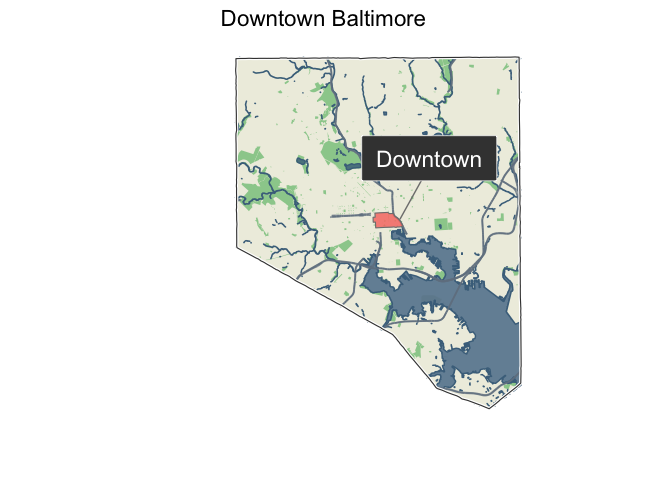
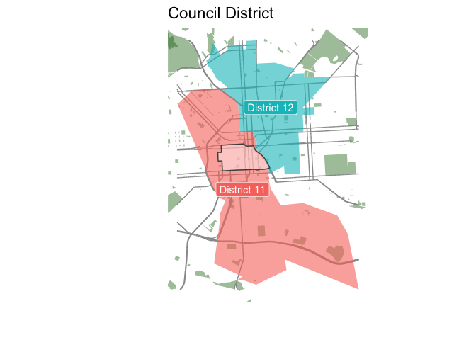
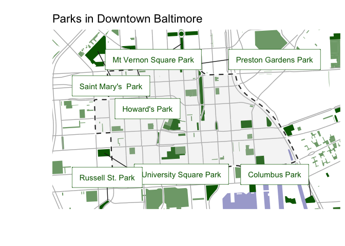
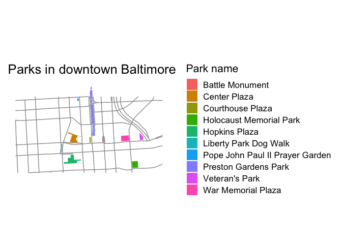
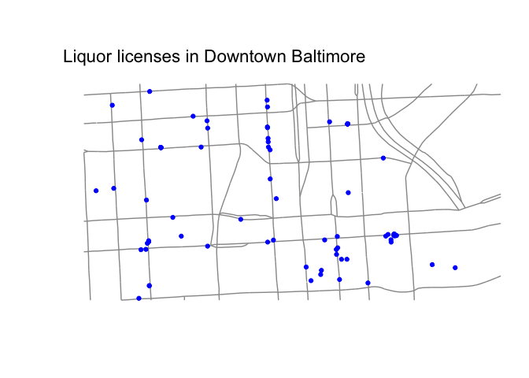

The goal of the mapbaltimore package is to provide an easy way to create maps of Baltimore neighborhoods, Council districts, and other areas using open data on schools, housing, parks, and public transit.
Installation
You can install this development version from GitHub with:
# install.packages("devtools")
remotes::install_github("elipousson/mapbaltimore")Examples
library(sf)
#> Linking to GEOS 3.10.2, GDAL 3.4.2, PROJ 8.2.1; sf_use_s2() is TRUE
library(ggplot2)
library(mapbaltimore)
set_map_theme()Less experienced R users may find the mapbaltimore package most useful for the convenient function you can use to quickly create maps of Baltimore neighborhoods.
For example, these maps show Downtown Baltimore in the context of the full city boundary and the local City Council district. Of course, the underlying open data can sometimes be a little unpredictable. In this case, the boundaries of the downtown neighborhood just slightly overlap with District 12 so this may be an error.
downtown <- get_area(
type = "neighborhood",
area_name = "Downtown"
)
map_area_in_city(area = downtown) +
labs(title = "Downtown Baltimore")
map_area_in_areas(
area = downtown,
type = "council district",
show_label = TRUE
)
The mapping functions rely on a general data function (get_area_data) to return selected data within and around an area. More experienced R users may prefer to use these functions directly for more direct control over the appearance of a map or to access the data for analysis.
For example, compare the map created by the map_area_parks function to a simple custom map made using data retrieved using the get_area_data function and streets from the get_area_streets function. get_area_streets wraps the get_area_data function and offers the option to filter streets by functional classification.
map_area_parks(area = downtown) +
labs(title = "Parks in Downtown Baltimore")
#> Reading layer `unimproved_property' from data source
#> `/private/var/folders/3f/50m42dx1333_dfqb5772j6_40000gn/T/Rtmpys5Z3S/temp_libpath5f713637d9ac/mapbaltimore/extdata/unimproved_property.gpkg'
#> using driver `GPKG'
#> Simple feature collection with 526 features and 64 fields
#> Geometry type: MULTIPOLYGON
#> Dimension: XY
#> Bounding box: xmin: 431755 ymin: 179395.1 xmax: 434669.5 ymax: 181385.7
#> Projected CRS: NAD83(HARN) / Maryland
downtown_parks <- get_area_data(
data = parks,
area = downtown,
crop = FALSE,
trim = FALSE
)
downtown_streets <- get_area_streets(
area = downtown,
sha_class = c("PART", "MART", "INT")
)
ggplot() +
geom_sf(data = downtown_streets, color = "gray60") +
geom_sf(data = downtown_parks, aes(fill = name), color = NA) +
labs(
title = "Parks in downtown Baltimore",
fill = "Park name"
)
Please note: the real property data that was previously included with this package has been removed because loading the full dataset into memory was causing major performance problems. I’m developing a new function to download, process, and cache these larger data sets but, until this is complete, none of the functions related to real property data will work.
If you need data that is not included with the package, mapbaltimore includes several functions for accessing remote data including get_area_osm_data and get_area_esri_data. These functions are largely wrappers for other packages with get_osm_features using the rOpenSci osmdata package, get_area_esri_data using the esri2sf package, and get_maryland_open_resources using the RSocrata package. For example, see this map of liquor licenses for downtown using one of the (still limited) number of remote data sources supported by get_area_esri_data:
liquor_licenses <- get_area_esri_data(
area = downtown,
type = "liquor licenses",
trim = TRUE
)
#> ✔ Downloading "Liquor_Licenses" from
#> <]8;;https://opendata.baltimorecity.gov/egis/rest/services/Hosted/Liquor_Licenses/FeatureServer/0/https://opendata.baltimorecity.gov/egis/rest/services/Hosted/Liquor_Licenses/FeatureServer/0/]8;;>
#> Layer type: "Feature Layer"
#>
#> Geometry type: "esriGeometryPoint"
#>
#> Service CRS: "EPSG:3857"
#>
#> Output CRS: "EPSG:4326"
#> Warning: attribute variables are assumed to be spatially constant throughout all
#> geometries
ggplot() +
geom_sf(data = downtown_streets, color = "gray60") +
geom_sf(data = liquor_licenses, color = "blue") +
labs(title = "Liquor licenses in Downtown Baltimore")
Ongoing development
Overall, this package is definitely experimental and I’m changing functions on a regular basis so use with caution. Here are a few of the ideas I’m hoping to add to this package:
- making map functions work as layers (more similar to snapbox or ggspatial)
- labeled data using the labelled package (many city data sources have limited or inaccessible documentation)
- gt tables to display property characteristics by neighborhood
- functions for working with VitalSigns data from the Baltimore Neighborhood Indicators Alliance
- additional historic spatial and demographic datasets
Suggestions and feature requests are welcome!
Related and inspirational packages
The development of mapbaltimore was inspired in part by a handful of other “place-based” R packages that I’ve seen over the past few months such as nycgeo for New York City and gateway for Saint Louis.
At the national level, tigris provides access to boundary data for all geographies used by the U.S. Census Bureau. mapbaltimore uses tigris to download all of the U.S. Census geographies that are included with the package. Outside the U.S., there are similar packages that provide access to varied boundary data for Brazil geobr, Uruguay ‘geouy’, Chile ‘chilemapas’ and Mexico ‘mxmaps’.